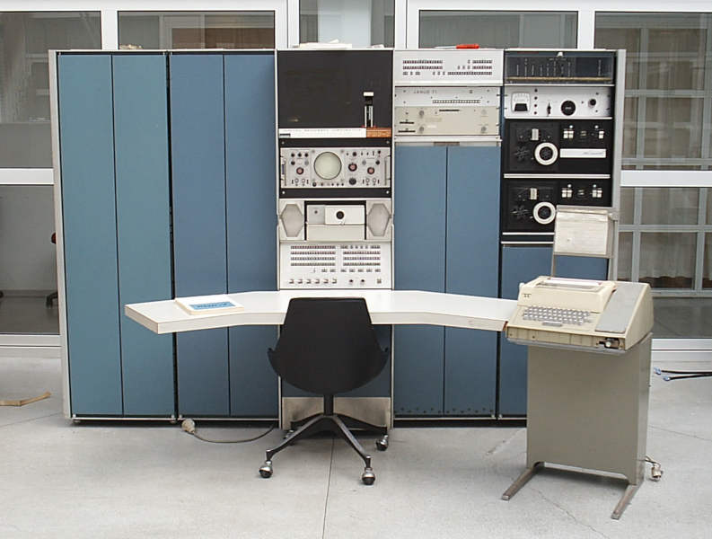
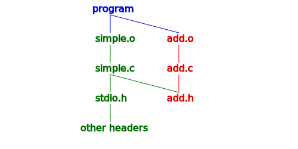

The C++ Build Process Explained
The last good thing written in C was Franz Schubert's Symphony Number 9.
-- Erwin Dieterich
Fifty years of programming language research, and we end up with C++?
-- Richard A. O’Keefe
There are only two kinds of programming languages: those people always bitch about and those nobody uses.
-- Bjarne Stroustrup
The C++ build process is built on top of the C build process which was hacked together in 1972 on a PDP-7 with at most 144 KB of RAM. Honestly, I'm surprised it aged so well.

The exact linking process in C and C++ isn't standard, it's up to each compiler to make things work. Most compilers behave in the same way with small differences but we'll be focusing on the GNU tools to keep things simple.
An Overview
Computers in 1972 weren't very powerful and so the process had to be broken down into smaller steps. This also allows you to rebuild only the parts that change.
- we have many C/C++ source files,
-
for each source file, we run an independent compiler,
- we run the pre-processor over the current file,
- this pulls in every header and its parents into the file,
- the file gets compiled and transformed into an object,
- we group every object we generated into an executable or library.

Entering a command to compile every source file separately is annoying and so we have a build tool that knows how to compile each of our source files. Not only that but it can also regenerate the objects for the source files that have changed saving us a lot of time when recompiling with minor changes.
Trivial C Program
Let's use a trivial C program to illustrate the build process. We can build it with the following commands:
cc -Wall -O0 -std=c99 -g -c -o add.o add.c
cc -Wall -O0 -std=c99 -g -c -o simple.o simple.c
add.h
#ifndef ADD_H_INCLUDED
#define ADD_H_INCLUDED
int add(int a, int b);
int sub(int a, int b);
#endif // ADD_H_INCLUDED
add.c
#include "add.h"
int add(int a, int b)
{
return a + b;
}
int sub(int a, int b)
{
return a - b;
}
simple.c
#include <stdio.h>
#include "add.h"
int main(int argv, char **argc)
{
printf("%i\n", sub(add(5, 6), 6));
return 0;
}
Why Headers?
TLDR we need to know the size of structures and function arguments
When our main function wants to call the add function, it
needs to know what it returns and what it takes in as an argument before
it can call the function. A typical call to add from our
main would look like:
-
our
mainfunction,- push space for the return value onto a stack (an int),
-
push the parameters onto the stack (
aandb), - push the return address (the next part of our main function),
- jump to the add function,
-
our
addfunction- store the execution state,
-
add
aandbplacing the result in the return value space, - restore the execution state,
- jump to the return address,
-
back in our
mainfunction,- pop the parameters (
aandb), - use the return value that is now on the stack.
- pop the parameters (
The way to call a function and the method for building the stack make up most of an ABI (Application Binary Interface) definition. Every compiler is free to have its own ABI. The same compiler usually has a different ABI for the different processors it supports. This makes things complex but efficient.
Since we are making space on the stack for our return value and parameters, we have to know their size. If any of those are a structure, we have to know what it's made of so that we can know its size. We let the compiler know all this with function declarations and structure definitions.
You could put a function's declaration in every source file that needs it but that's a terrible idea since the declaration has to be the same everywhere if you want anything to work. Instead of having the same declaration everywhere, we put the declaration in a common file and include it where it is necessary. This common file is what we know as a header.
Sometimes, we only use a structure through pointers or references which means we don't really have to know that structure's exact size. This leads to a clever trick known as pointer implementation (PIMPL) which is really useful for speeding up compilation and hiding implementation details. For more information on PIMPL.
Pre-processor
In those header files and source files, you've hopefully noticed lines
that start with #. Whenever you see a directive that starts
with #, we are dealing with the C pre-processor. The
pre-processor does the following:
- include files (
#include), -
macro expansions (
#define RADTODEG(x) ((x) * 57.29578)), -
conditional compilation (
#if,#ifdef, etc.), - line control (
__FILE__,__LINE__).
Basically, the compiler has a state which can be modified by these
directives. Since every *.c file is treated independently,
every *.c file that is being compiled has its own state.
The headers that are included modify that file's state. The
pre-processor works at a string level and replaces the tags in the
source file by the result of basic functions based on the state of the
compiler.
The #include pre-processor is probably the most important.
Luckily, it is really simple: it finds the file and replaces the
#include line with the contents of that file.
Where does it find the files?
-
#include <sum.h>looks forsum.hin a list of include directories, -
#include "sum.h"does the same but looks in the current folder first.
C and C++ don't actually define a mechanism for providing the list of include directories, that is up to the compiler. This causes many problems with cross platform development which some build tools can solve.
Include Guards
When you include a header, there is usually a #ifndef and
#define statement at the top of the file and a
corresponding #endif at the bottom. We call this an include
guard. It is responsible for setting a variable the first time it is run
so that including the same file a second time doesn't redefine things
that already exist and cause the compiler to panic.
#ifndef FILENAME_INCLUDED
#define FILENAME_INCLUDED
// code
#endif
This is a very useful trick but it's also one of the more fundamental problems of C:
- you include a file a first time,
- it modifies the compiler state,
- you include the same file a second time,
- based on the compiler state, it pretends to be empty.
That is completely crazy - the file you include can change based on the state of the compiler. Not only that but the included files themselves can modify the state of the compiler (windows.h is infamous for doing this).
Because of this, compiling becomes slow and complex. Suppose that we
want to compile two files which both include
<string.h> and that
<string.h> itself includes about 50 other files. We
are not able to cache <string.h> without proving that
the compiler state is the same when we include it!
So what started out as a simple, easy to implement solution turns out to scale really poorly. This wasn't an issue in 1972 when the computers limited the complexity but almost 50 years later, it's a big problem. The C++ standards committee has been trying to introduce a module system to fix this but it's a difficult task to change such a fundamental system in an established language.
Header Trees
When you include a header, this header can include others and it can
quickly get messy. If we compile a file with the -H flag,
we can visualize the various header graphs:
gcc -H -O0 -std=c99 -g -c -o simple.o simple.c
-
/usr/include/stdio.h
-
/usr/include/bits/libc-header-start.h
-
/usr/include/features.h
-
/usr/include/sys/cdefs.h
- /usr/include/bits/wordsize.h
- /usr/include/bits/long-double.h
-
/usr/include/gnu/stubs.h
- /usr/include/gnu/stubs-64.h
-
/usr/include/sys/cdefs.h
-
/usr/include/features.h
- /usr/lib/gcc/x86_64-pc-linux-gnu/8 2 1/include/stddef.h
- /usr/lib/gcc/x86_64-pc-linux-gnu/8 2 1/include/stdarg.h
-
/usr/include/bits/types.h
- /usr/include/bits/wordsize.h
- /usr/include/bits/typesizes.h
-
/usr/include/bits/types/__fpos_t.h
- /usr/include/bits/types/__mbstate_t.h
- /usr/include/bits/types/__fpos64_t.h
- /usr/include/bits/types/__FILE.h
- /usr/include/bits/types/FILE.h
- /usr/include/bits/types/struct_FILE.h
- /usr/include/bits/stdio_lim.h
- /usr/include/bits/sys_errlist.h
-
/usr/include/bits/libc-header-start.h
- add.h
We can see that we go from 2 includes to 22. This can quickly get out of hand for big projects.
The difficulty is that sometimes, you are including many headers
indirectly through another header. For example, if you include
ros.h, it includes boost
which quickly balloons the number of headers to parse. It can quickly
get out of hand and to compile a single source file, you sometimes have
to visit over 2000 header files. This makes compilation excruciatingly
slow and this is where the
PIMPL
idiom can really help.
An Object File
After all this work, the compiler can do the actual compiling of our source file with all the headers pasted into it. Once the compilation is finished, we have an object file.
An object file is an organized way to store assembly functions that
aren't yet linked together. We can examine the object file we generate
with the simple.c source file with the following command:
objdump -dr simple.o
simple.o
simple.o: file format elf64-x86-64
Disassembly of section .text:
0000000000000000 <main>:
0: 55 push %rbp
1: 48 89 e5 mov %rsp,%rbp
4: 48 83 ec 10 sub $0x10,%rsp
8: 89 7d fc mov %edi,-0x4(%rbp)
b: 48 89 75 f0 mov %rsi,-0x10(%rbp)
f: be 06 00 00 00 mov $0x6,%esi
14: bf 05 00 00 00 mov $0x5,%edi
19: e8 00 00 00 00 callq 1e <main+0x1e>
1a: R_X86_64_PLT32 add-0x4
1e: be 06 00 00 00 mov $0x6,%esi
23: 89 c7 mov %eax,%edi
25: e8 00 00 00 00 callq 2a <main+0x2a>
26: R_X86_64_PLT32 sub-0x4
2a: 89 c6 mov %eax,%esi
2c: 48 8d 3d 00 00 00 00 lea 0x0(%rip),%rdi # 33 <main+0x33>
2f: R_X86_64_PC32 .rodata-0x4
33: b8 00 00 00 00 mov $0x0,%eax
38: e8 00 00 00 00 callq 3d <main+0x3d>
39: R_X86_64_PLT32 printf-0x4
3d: b8 00 00 00 00 mov $0x0,%eax
42: c9 leaveq
43: c3 retq
This is what the most complex file in our tiny example looks like. The
important thing to notice is that the assembly code is grouped into the
<main> function and that there are calls to functions
that don't yet exist like the call to sub copied below:
25: e8 00 00 00 00 callq 2a <main+0x2a>
26: R_X86_64_PLT32 sub-0x4
Symbol Tables
At the top of an object file there is a list of all the functions that are defined in that object and all the functions that are used but not defined. This is known as a symbol table.
To get our symbol tables, we use the following commands:
nm add.o > add.sym
nm simple.o > simple.sym
add.o
| Position | Type | Name |
|---|---|---|
| 0 | Text | add |
| 14 | Text | sub |
simple.o
| Position | Type | Name |
|---|---|---|
| Undefined | add | |
| Undefined | GLOBAL_OFFSET_TABLE | |
| 0 | Text | main |
| Undefined | printf | |
| Undefined | sub |
A Linker's Job
To get an executable, we put many object files together and link the undefined function calls to their implementations found in other object files. There are two ways to do this:
- Linking the functions directly together by jumping directly to the function.
- Having a table that contains our functions and look up where to jump before jumping to the desired function.
The first option describes static linking. This is more efficient, less flexible and rarely used.
The second option describes dynamic linking. It is a little bit slower but much more flexible and is the standard way to ship a library.
Differences in C++
So far, we've been talking about C but luckily, C++ was designed to be compatible with the C build process. In fact, the first C++ compiler was known as "C with Classes" and it was a pre-compiler that transformed a C++ into C.
Modern C++, introduces two big differences:
- templates,
- mangling.
Templates are complicated enough to have their own tutorial but mangling is pretty simple and more important. The following source file gives us an idea of mangling:
extern "C" int add_c(int a, int b)
{
return a + b;
}
int add(int a, int b)
{
return a + b;
}
int add(const int *a, const int &b)
{
return *a + b;
}
float add(float a, float b)
{
return a + b;
}
namespace manu
{
int add(int a, int b)
{
return a + b;
}
}
If we look at it with nm:
nm mangling.o
c++filt _Z3addff
...
| Position | Type | Name | Signature |
|---|---|---|---|
| 0 | Text | add_c | int add_c(int, int) |
| 44 | Text | _Z3addff | float add(float, float) |
| 14 | Text | _Z3addii | int add(int, int) |
| 28 | Text | _Z3addPKiRS_ | int add(const int *, const int &) |
| 5e | Text | _ZN4manu3addEii | int manu::add(int, int) |
Basically, in C, functions are simply identified by their names. This
prevents us from having namespaces and having a function with the same
name but different arguments. C++ gets around this by using mangling.
extern "C" turns off mangling so that C++ can be compatible
with C.
Unfortunately, many compilers do mangling differently and so are incompatible. Luckily, most compilers have recently standardized on the Itanium C++ ABI that you see above.
-
start with
_Zsince underscore capital letter is reserved in C, -
an
Nafter theZindicates nested names, - put numbers that indicate the length of the next argument,
- this gives us a list of strings,
- the last string is the function, class or struct name,
- the previous ones are the namespaces or outer classes,
- if our names were nested, we insert an
E, - we indicated the type and modifiers of our arguments.
Even with mangling, we don't have enough size information for function calls to forgo headers. We are missing the size of the return value and the size of structures.
A Basis for Objects
To build an object system, we need static dispatch (when two functions
have the same name, calling the one with matching arguments). This is
crucial so that we can differentiate between a.method and
b.method. If we didn't have mangling, we couldn't use the
same method name in two different classes.
struct Num
{
int add(int a, int b)
{
return a + b;
}
};
int add(const Num *self, int a, int b)
{
return a + b;
}
int main(int, char **)
{
Num a;
const int res1 = a.add(5, 6);
const int res2 = add(&a, 5, 6);
return res1 + res2;
}
| Position | Type | Name | Signature |
|---|---|---|---|
| 18 | Text | main | main |
| 0 | Text | _Z3addPK3Numii | add(const Num *, int, int) |
| 0 | Weak | _ZN3Num3addEii | Num::add(int, int) |
Putting Things Together with Build Systems
We don't want to remember and execute the build commands by hand (at least I don't). That's why we have build tools:
- Make,
- meson,
- Autotools,
- bazel,
- CMake,
- VisualStudio,
- bash scripts,
- etc.
A build tool usually:
- has a list of source files,
- knows how to build each source file,
- keeps a dependency graph to rebuild only files that change,
- keeps a list of directories containing header files,
- keeps a list of external libraries to link to (static/dynamic),
- manages compiler flags (optimization level, warning level),
- knows which files to link into executables and libraries.
Some build tools offer additional features:
- program installation,
- cross platform support,
- cross compilation,
- dependency installation.
Ideally, at the end of all this, we can quickly and easily generate bug free programs.
We've been trying to generate bug free programs since at least 1972, have come close a few times but have never truly managed. Thankfully, most of the time, the compiler, linker and build system aren't to blame.